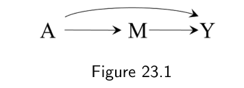
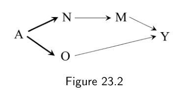
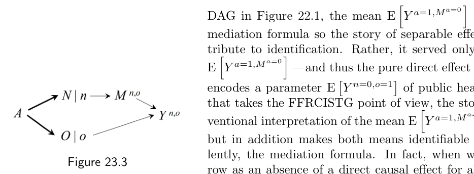
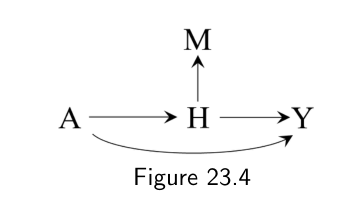
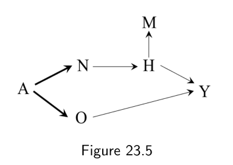
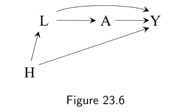
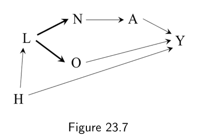
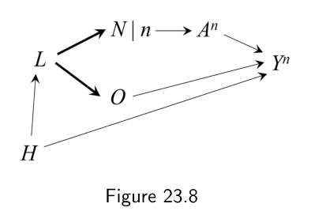

第三部分 · 时变处理的因果推断 · Part III — Causal inference for time-varying treatments
第 23 章 · 因果中介
Hernán MA, Robins JM（2020）. Causal Inference: What If. Chapter 23. 本页为中文全文翻译，附译注。
在第三部分，我们介绍了估计时变处理对结局之因果效应的各种方法。我们的目标是量化：在持续一段时间的不同处理策略下，结局分布会如何变化。我们的目标并不是弄清楚处理究竟通过什么方式对结局发生作用。现在我们把注意力转向因果中介（causal mediation）：研究处理影响结局所经由的那些因果通路。
因果中介研究可以看作时变处理因果推断的一个特例。在中介分析里，与其说是一个处理随时间取不同的值，我们实际上有两个不同的变量——感兴趣的处理和中介变量——处在不同的时间点上。本章描述的因果中介理论框架，和本书其余部分一样，建立在可以映射到目标试验的假想干预之上。与其他基于纯直接效应和总间接效应的中介方法不同，一个干预主义的中介框架为因果估计的经验验证打开了大门——而可经验验证，是任何科学工作都应当追求的性质。
23.1 受到质疑的中介分析
设想一项随机化试验：随机抽取一批吸烟者，把他们分配到戒烟（A = 0）或继续吸烟（A = 1）。假若完全依从：所有分到 A = 0 的人都戒了烟，所有分到 A = 1 的人都继续吸烟。研究者发现，戒烟对 1 年时心肌梗死风险 Y 有益，即 E[Y|A = 1] > E[Y|A = 0]。
在确定了戒烟 A 对心脏病风险 Y 的有益效应之后，研究者开始琢磨：这份好处是不是 A 降低高血压 M 所带来的结果。除了基线时的处理 A 数据和 1 年时的结局 Y 数据，他们手上还有 6 个月时测量的高血压 M 有无的数据。（为简单起见，假定头 6 个月里没有任何人发生结局 Y。）图 23.1 的因果图在「对 M 的干预有足够明确的定义」这一假定下描绘了这些变量。

A 经由中介变量 M（高血压）影响结局 Y（心脏病），同时另有一条由 A 直接指向 Y 的通路。此图以「对 M 的干预有明确定义」为前提。研究者感兴趣的是把 A 对 Y 的总效应，拆成由 M 中介的间接因果通路，以及不由 M 中介的直接通路。这时我们说，研究者感兴趣的是一个因果中介分析。
上一章我们介绍了几种把直接效应概念形式化的方法（技术要点 22.1 和 22.2），却没有介绍间接效应。要把总处理效应形式化地分解为直接效应和间接效应，我们可以定义 A 对 Y 的纯直接效应（pure direct effect）和总间接效应（total indirect effect）。
边注 Robins 和 Greenland（1992）最早提出了纯直接效应和总间接效应。
A 对 Y 不经由 M 的纯直接效应，指的是这样一个平均因果效应：如果对每一个人，M 的取值都被设定为「假如 A 被设为 0，M 将会取的那个值」，也就是把 M 设为 Ma=0（对某些人是 1，对另一些人是 0），那么 A 对 Y 的平均因果效应。
于是纯直接效应就是下面这个对比：E[Ya=1,Ma=0] − E[Ya=0,Ma=0]。
在我们的例子里，纯直接效应说的是这么一件事：如果我们能把每个人的高血压 M（1 或 0）指定为「假如她戒了烟，她本会有的高血压取值」，那么戒烟 A 的效应会是什么。对于真的戒了烟的人，这个高血压 M 的取值是已知的；对于继续吸烟的人，它仍然是未知的。因此我们说，E[Ya=1,Ma=0]——因而纯直接效应——是一个跨世界量（cross-world quantity），因为它涉及一个由两个处理值 a = 1 和 a = 0 标号的反事实结局，而这两个值在同一个世界里不可能对同一个人同时发生。Pearl（2001）分别把纯直接效应和总间接效应称作自然直接效应和自然间接效应。
总间接效应同样是跨世界量，定义为 E[Ya=1,Ma=1] − E[Ya=1,Ma=0]。
纯直接效应与总间接效应之和 E[Ya=1,Ma=1] − E[Ya=0,Ma=0]，由一致性（consistency）就是总效应 E[Ya=1] − E[Ya=0]。
在图 23.1 中，中介变量 M 与结局 Y 之间不存在未测量的共同原因。若存在共同原因，任何直接效应都无法被识别，包括控制直接效应（controlled direct effects）以及中介效应，也就是纯直接效应和总间接效应。要识别中介效应，就需要在图 23.1 的因果图下识别出跨世界量 E[Ya=1,Ma=0]。所谓的中介公式（mediation formula）正是干这件事的：
E[Ya=1,Ma=0] = ∑m E[Y|A = 1, M = m] · Pr[M = m|A = 0]
证明见技术要点 23.1。
中介公式之所以让人吃惊，是因为它识别出了一个跨世界反事实量，而这个量的取值无法被任何针对 A 和 M 的实验性干预所证实，原则上都不能。要做到这一点，就必须假定图 23.1 的因果图表示的是一个 NPSEM-IE，而不是 FFRCISTG；后者才是全书一直使用的那个反事实模型（见技术要点 6.2）。
边注 在一些非常不寻常的情形下，我们可以用交叉设计试验来识别这个跨世界反事实量的取值（见精细辨析 2.1 和 3.2）。
中介公式的证明依赖一个无法验证的假定：在彼此分开的世界里定义的某些反事实变量是相互独立的。具体地说，证明要求「在一个我们联合干预、把处理值设为 1、把中介值设为 m 的世界里，结局 Ya=1,m 的取值」独立于「在一个我们干预把处理值设为 0 的世界里，中介变量 Ma=0 的取值」。因此，Ya=1,m 和 Ma=0 不可能在同一个世界里被同时观察到（就同一个人而言），它们的独立性也就无法在任何单独或联合随机分配 A 与 M 的实验中加以经验验证（见技术要点 7.1）。
边注 在 FFRCISTG 模型下，纯直接效应和总间接效应不是点识别的，但可以得到精确界（sharp bounds）（Robins 和 Richardson 2010）。
这些跨世界独立性在 NPSEM-IE 下被假定，在 FFRCISTG 模型下则不被假定。这也是我们宁取 FFRCISTG 模型而不取 NPSEM-IE 的理由之一：既然跨世界独立性无法被任何随机化实验验证，我们就希望使用那些结果原则上可以被验证的因果推断方法。
基于上面的讨论，一些政策制定者并不为研究者能识别纯直接效应而感到鼓舞。作为一个跨世界参数，他们认为纯直接效应没有政策上的、也没有公共卫生上的意义，因为它不对应任何干预。要说服这些怀疑者，NPSEM-IE 的拥护者还得再下些功夫。
23.2 为中介分析辩护
戒烟试验的研究者作为 NPSEM-IE 的拥护者，准备了下面这套说辞，想让怀疑者相信纯直接效应在实务上是有用的。
"假设从现在起一年之后，无尼古丁香烟将会上市，而你的政策目标是尽快弄清无尼古丁香烟的益处。为此，我们利用上述戒烟试验中已经收集到的数据，来估计在『要求所有吸烟者改吸无尼古丁香烟（在它上市之后）』这一干预下心脏病
Y的两年风险。假设有很强的实验性证据表明：(i) 尼古丁对结局Y（心脏病）的全部因果效应，都是通过它对中介变量M（高血压）的效应产生的；(ii) 香烟中的非尼古丁成分对中介变量M（高血压）没有直接因果效应。在假设 (i) 和 (ii) 下，一名吸无尼古丁香烟者的高血压状态M将等于她在不接触香烟情形下的高血压状态，因此E[Ya=1,Ma=0]就是『假如所有吸烟者都在一年后改吸无尼古丁香烟』情形下的心脏病风险。那正是你感兴趣的公共卫生效应，而这就是把我们研究的这套数据代入中介公式所算出来的东西。"
边注 Pearl（2001）给出过一套类似的论证，用来为使用纯直接效应辩护。
E[Ya=1,Ma=0] 这个量是有意思的。为了论证参数 E[Ya=1,Ma=0] 在实质上的重要性，NPSEM-IE 的拥护者会讲一个关于"对香烟中尼古丁含量施加干预"的故事——这个干预根本不提中介变量 M。此外，他们还做出了"无直接效应"的假设 (i) 和 (ii)，而这些假设涉及的变量，连图 23.1 的因果图里都没画。
研究者讲的故事是这样的：变量 A 可以分解成两个可分离成分（separable components）N 和 O。可分离成分 N直接影响 M，但不影响 Y；可分离成分 O 直接影响 Y，但不影响 M。而且按照这个故事，每个可分离成分原则上都可以被单独干预。比如，Yn=0,o=1 表示的是在"只把香烟里的尼古丁成分拿掉"这一干预下的反事实结局。
这个因果故事最直接的呈现方式，是图 23.2 的因果 DAG 所表示的一个 FFRCISTG 模型：N 是代表尼古丁暴露的二值变量，O 是代表香烟中其他非尼古丁成分暴露的二值变量。从 A 指向 N 和 O 的加粗箭头表示确定性关系。这是因为在试验的实际数据中，一个人要么继续吸普通香烟，此时 A = N = O = 1；要么把烟戒掉，此时 A = N = O = 0。

A 拆成可分离成分 N（尼古丁）与 O（其他非尼古丁成分）。加粗的 A → N 与 A → O 表示确定性关系；没有 N → Y 与 O → M 两条边，对应假设 (i) 与假设 (ii)。边注 这些是"无控制直接效应"的假设。假设 (i) 说的是：在控制（设定）M 的取值之后，N 对 Y 没有直接效应。
N 到 Y 没有箭头，编码了假设 (i)：N 对 Y 没有直接效应。O 到 M 没有箭头，编码了假设 (ii)：O 对 M 没有效应。图 23.3 展示了相应的 SWIG。如果 O 并非对每一个人都是 M 的原因，我们还可以把随机变量 Mn,o 简写成 Mn。

N、O 换成被干预的节点 N|n、O|o，下游变量 M、Y 带上相应的反事实上标。在这个问题刻画之下，识别 E[Yn=0,o=1] 的 g 算法恰好就是中介公式（证明见技术要点 23.2）。让我们回顾一下学到的教训。
对一位一开始就接受"与图 23.1 的 DAG 相关联的 NPSEM-IE"的研究者来说，均值 E[Ya=1,Ma=0] 已经由中介公式识别出来，所以关于 N 和 O 可分离效应的故事并没有为识别工作贡献什么。它只是用来说明：参数 E[Ya=1,Ma=0]——因而纯直接效应和总间接效应——所编码的，是另一个具有公共卫生意义的参数 E[Yn=0,o=1]。而对一位采取 FFRCISTG 立场的研究者来说，这个故事不只是给均值 E[Ya=1,Ma=0] 提供了一个干预主义的解释——把它解释成均值 E[Yn=0,o=1]——还额外让这两个均值都能被 g 算法、或等价地被中介公式识别。事实上，当我们把"没有箭头"解释为"对所有人都不存在直接因果效应"时，Ya=1,Ma=0 与 Yn=0,o=1 对每一个人都是相等的。
这样的问题刻画还让我们能够定义并识别成分 N 对结局 Y 的可分离直接效应（separable direct effect）E[Yn=1,o=1] − E[Yn=0,o=1]，它是可分离成分 N 的控制直接效应。这个效应同时也等于总间接效应 E[Ya=1] − E[Ya=1,Ma=0]。类似地，E[Yn=1,o=1] − E[Yn=1,o=0] 就是纯直接效应 E[Ya=1,Ma=0] − E[Ya=0,Ma=0]。
23.3 可经验验证的中介
对 E[Ya=1,Ma=0] 的干预主义解释，只有在关于 N 和 O 可分离效应的故事正确、并且图 23.3 表示的是一个 FFRCISTG 时才成立。干预主义解释的好处在于：这个故事是否成立，原则上可以通过一项随机化试验来经验证伪。下面我们描述这样一项试验。
一年之后无尼古丁香烟上市时，我们做一项新的随机化试验，把随机抽取的吸烟者样本随机分配到三组之一：戒烟（A = N = O = 0）、继续吸普通香烟（A = N = O = 1），或者改吸无尼古丁香烟（N = 0, O = 1）。也就是说，新试验有和原试验相同的两个组，外加一个无尼古丁香烟组。在不存在时间趋势的情况下，前两组的结局均值在两项试验中应当相同。我们假定两项试验的样本量都足够大，大到可以忽略抽样变异。
由于随机化，新试验中的结局均值 E[Y|N = 0, O = 1] 预期等于 E[Yn=0,o=1]。因此，如果我们的故事正确，我们就预期 E[Y|N = 0, O = 1] 会等于早先那项试验算出的中介公式。否则，关于 N 和 O 的故事就被经验证伪了，这意味着下列假设中有一条或多条不成立：(i) 尼古丁对结局没有直接效应；(ii) 其他非尼古丁成分对中介变量没有直接效应；(iii) 图 23.2 的因果图上 M 与 Y 之间没有未测量的共同原因 U。
如果 E[Y|N = 0, O = 1] 与中介公式不同，我们就可以用这项新试验的数据去查清假设 (i)–(iii) 中究竟哪些是假的。为此，我们先检查在 N = 0 的人当中，O 与 M 是否有关联，即
E[M|N = 0, O = 1] − E[M|N = 0, O = 0] ≠ 0
如果确实如此，那么假设 (ii) 就被证伪了，图 23.2 中应当补上一条 O → M 的箭头（图 23.3 中相应的那条也要补上）。
接下来我们检查在 M 与 O 的联合水平之内，N 与 Y 是否有关联，即对某些 m 取值是否有
E[Y|N = 1, O = 1, M = m] − E[Y|N = 0, O = 1, M = m] ≠ 0
如果确实如此，那么假设 (i) 被证伪（这意味着因果图中应当补上一条 N → Y 的箭头），或者存在 M 与 Y 的未测量共同原因 U（它也应当被补进因果图）。见精细辨析 23.1。
现在设想两年之后，新试验的结果出来了：两项试验中对应同一干预的各组，其结局均值估计彼此相等，但新试验第三个组的结局均值估计 E[Y|N = 0, O = 1] 与第一项试验的中介公式不同。不同的人会作何反应？
一位原本假定图 23.1 是 NPSEM-IE 的人，和一位只假定它是 FFRCISTG 的人，会同意同一件事：关于 O 和 N 可分离效应的故事是错的，而且 E[Yn=0,o=1] 应当由新试验第三个组的结局均值来正确估计，而不是由早先那项试验的中介公式来估计。
那些原先假定 NPSEM-IE 的人仍可以相信，均值 E[Ya=1,Ma=0] 等于中介公式；但他们再也无法把纯直接效应的策略意义辩护成"改吸无尼古丁香烟的效应"。那些假定 FFRCISTG 的人可能对原先的中介公式兴趣不大。他们更感兴趣的是：从这项三组随机化试验里，他们究竟学到了无尼古丁香烟对结局的什么效应。他们同样还会感兴趣于发现下列假设中有一条或多条是假的：(i) 尼古丁对结局没有直接效应；(ii) 其他非尼古丁成分对中介变量没有直接效应；(iii) M 与 Y 之间没有未测量的共同原因 U。
继续假定图 23.1 表示一个 FFRCISTG 模型，并且未来的无尼古丁香烟试验中 E[Yn=0,o=1] 与中介公式不同。有意思的问题是：处理 A 能否总是被分解成另外一些（可能并不知道的）可干预成分 N′ 和 O′，使得图 23.2 是一个 FFRCISTG，且"无直接效应"假设 (i) 与 (ii) 都成立——那样的话 E[Yn′=0,o′=1] 就等于 E[Ya=1,Ma=0]，而且两者都等于中介公式？答案是否；否则 E[Ya=1,Ma=0] 就会总是被中介公式点识别，而事实并非如此。
边注 如果 E[Ya=1,Ma=0] 总是能被中介公式点识别，那么 Robins 和 Richardson（2010）给出的那些精确界就会被违反。
23.4 中介的干预主义理论
本章介绍了一种因果中介的干预主义理论，它不同于那种基于纯直接效应和总间接效应的标准做法。由于干预主义理论是为了回应标准理论中被察觉到的缺陷而发展出来的，我们先描述了标准理论，以及它倚赖跨世界（嵌套）反事实所带来的麻烦。不过，干预主义理论也可以被看作自成一体的：它为讨论中介问题提供了一套自足的框架，无需援引跨世界的嵌套反事实。
边注 这套干预主义中介理论由 Robins 和 Richardson（2010）提出，Robins、Richardson 和 Shpitser（2022）作了推广。该理论已被推广到生存分析（Didelez 2019；Aalen 等 2020）、竞争风险（Stensrud 等 2020，2021）以及存在干扰（interference）的情形（Shpitser 等 2021）。
为了做到这一点，我们用的是一项（简化的）随机化试验，干预是一个时间固定的处理。核心的思路是把中介问题重新表述成这样一个问题：对处理 A 在结局 Y 上那些具有实质意义的可分离成分（N 和 O）施加干预，会产生什么效应。如果 N 和 O 是 A 的可分离效应，那么在一项设有如下 6 个组的未来随机化试验里：
- 按
a = 1处理； - 按
a = 0处理； - 按
n = 1, o = 1处理； - 按
n = 0, o = 0处理； - 按
n = 0, o = 1处理； - 按
n = 1, o = 0处理。
下面两条陈述成立。第一，第一组的结局 Y 均值等于第三组的均值，第二组的结局均值等于第四组的均值。第二，E[Yn=0,o=1] 被识别为该未来试验第五组的结局均值，E[Yn=1,o=0] 被识别为第六组的结局均值——无论 E[Yn=0,o=1] 能否从观测数据中被识别。
我们可以利用目前已有的关于 A、M、Y 的数据，在以下假设下识别 N 和 O 的可分离效应：(i) 中介变量 M 与结局 Y 之间没有未测量的共同原因；(ii) 成分 O 对中介变量 M、成分 N 对结局 Y 没有直接效应。特别地，E[Yn=0,o=1] 就等于中介公式。
边注 Stensrud 等（2021）强调了上述 6 组试验中、各组之间那些结局均值等式是必要的。
现在我们讨论偏好干预主义方法、而非更早那些中介方法的又一条理由。具体地说，针对假定中介变量 M 的干预常常没有明确定义，这时像 Ya,m 这样的反事实就没有意义。既然如此，基于 M 的纯直接效应和基于 M 的控制直接效应（见技术要点 22.1）就都不存在。相比之下，干预主义理论关心的是那些确实存在的效应——只要存在具有实质意义的可分离成分 N 和 O，并且如上所述可以对它们施加干预，至于对 M 的干预是否定义良好，无关紧要。
概括一下，一个干预主义的中介方法包含下面这几个要素。
- 假定处理
A可以分解为多个具有实质意义的可分离成分，每个成分都对处理的总体效应有所贡献，并且原则上可以被独立地干预； - 识别这些可分离成分效应所需的假定，原则上可以在未来的随机化试验中得到经验验证——在这些试验里，这些成分会被真正地干预；
- 对"中介变量"施加明确干预并非必要条件；
- 由于可分离成分在实质上足够具体，与领域专家的沟通会因此得到改善；
- 当识别假定成立时，识别用的 g 算法与中介公式完全相同；不过，被识别出来的因果效应指的是对那些可分离成分的干预。
为简单起见，我们只考虑了一个只有两个可分离成分的例子，但干预主义框架可以容纳处理的多个可分离成分，包括那些随时间变化的成分。
本章回顾了中介的理论概念，却没有着重讲估计纯直接效应和可分离直接效应的数据分析在实务层面的问题。在上一章引入控制直接效应和主层直接效应（principal stratum direct effects）时，我们采取了类似的做法。希望我们这样的呈现，能说清在识别直接效应时干预主义方法在科学上的优势。
边注 对于可分离效应，如果 M 与 Y 存在某个已测量的原因，而它是 N 和 O 的子节点，还会冒出别的问题（Robins 和 Richardson 2010；Robins 等 2022）。
在没有针对中介（针对控制直接效应而言）或针对处理的成分（针对可分离直接效应而言）真正施加干预的随机化试验的情况下，所有这些方法都依赖观察性数据，因而依赖全书一路讨论过来的那些可交换性假定。因此，有效的中介分析，除了本章讨论过的其他假定之外，还需要为"处理对结局的效应"和"中介变量对结局的效应"两者的混杂因素做调整。图 23.1 那张因果图，是当作一个教学装置来设计的，目的是在一个简化的设定里探讨与中介有关的理论问题，而不是要它真实地代表大多数因果中介研究。在实务中，因果中介分析是观察性分析，所依赖的假定比非中介分析更加"勇敢"（more heroic）。

H，箭头 H → M 表示 M 只是 H 的代理；A → H → Y 之外另有一条 A → Y 的直接通路。
N（尼古丁）与 O（其他非尼古丁成分），真正的中介是 H，M 是它的代理。给定 M 与 O 时，N 与 Y 之间存在后门路径。
L → Y 的边，因此 L 对 Y 的总效应不再被识别。
N 是报告给开药医生的 BMI 值 L，O 是用于决定是否转介物理治疗与膳食辅导的 BMI 值。加粗箭头 L → N 与 L → O 表示观测数据中恒有的 L = N = O。
N 换成被干预的 N|n，下游为 An 与 Yn。O 仍留在图中，因为在被干预的世界里依旧有 L ≡ O。